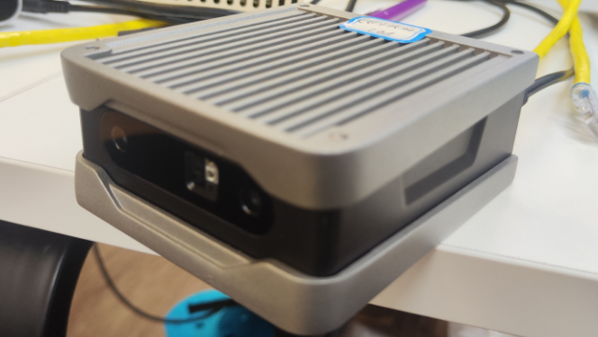
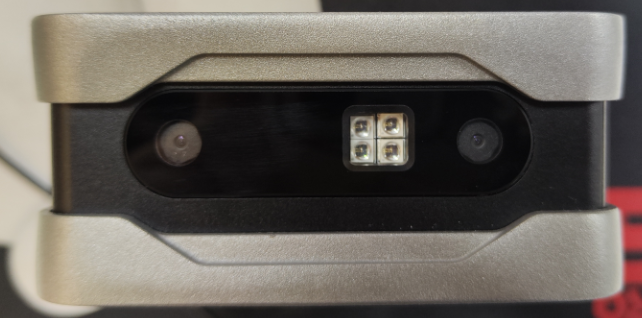
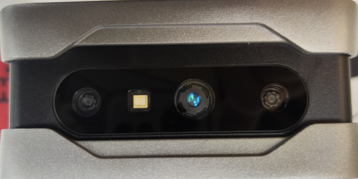
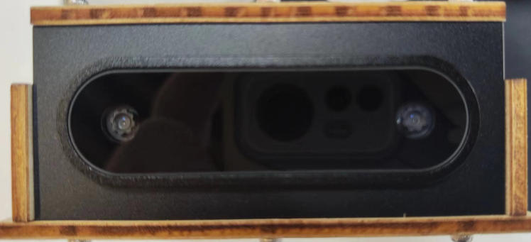
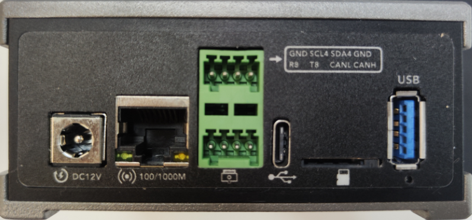

硬件组成和接口
Viobot主要由主板、传感器板和外壳组成。具体尺寸可以在用户手册上面找到。

传感器板上面是双目摄像头和IMU，摄像头已经打了胶固定在外壳的前脸，由于涉及到传感器外参标定，所以不可自行拆卸。
LED补光灯版本：

TOF版本：

轻量版：

轻量版没有补光灯或者TOF。
背板接口：

背面接口主要有12VDC电源口(支持11V-17V电压输入)；
RJ45千兆网口用作主要的数据通信接口；
2*4pin的接口，包含了I2C、UART、CAN三种常用接口，具体引脚与标签上标的一一对应，设备号分别是I2C6、CAN0,串口设备号： PRO版为ttyS0,基础版为ttyS8, 电平为3.3V
TYPE-C接口，用于升级系统，不用做数据传输接口！！！！！！
TF卡槽，支持最大256G高速卡，EXT4格式。
USB3.0口，可接一些USB设备作数据交换使用。